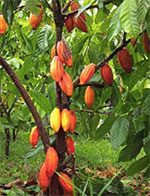
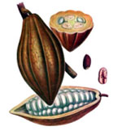
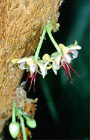
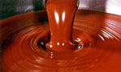
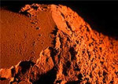
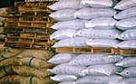

История появления Жители европейского континента узнали о существовании какао благодаря Колумбу, привезшего в качестве подарка с побережья Нового Света каноэ, помимо всего прочего заполненного неизвестными на тот момент какао-бобами. Но только к 28-му году шестнадцатого столетия европейцы узнали секрет приготовления бодрящего напитка на основе этих удивительных плодов. «Эликсир бодрости» получил название «чоколатль», в результате упрощенного до шоколада, который стал повсеместно иметь одно и тоже значение, что на тот момент было редкостью. Кортес, который даровал испанскому народу возможность первым насладиться этим новым напитком, вынужден был в скором времени хранить секрет его приготовления как государственную тайну, чего потребовала королевская знать в силу чрезмерного роста популярности какао-бобов. Так продолжалось на протяжении 100 лет, пока таинственный секрет путем ряда обстоятельств в круге королевской знати не попал к французам. Те восприняли его «на ура», создав первую в своей стране шоколадную лавку. Таким образом, распространение рецепта диковинного деликатеса по всей Европе стало делом времени и в конце концов дошло до голландцев, превратившихся с течением времени в главных поставщиков какао. 1825 год благодаря голландцу Ван Хойтену изменилась технология обработки этих заморских семян: появилась возможность их измельчения и получения какао-порошка. Сподвижники этой идеи первоначально рассчитывали лишь на улучшение растворимости, но добились большего: приятнее стал и сам вкус напитка. В 1847 году уже известное к тому времени масло какао стало одним из основных ингредиентов приготовления шоколада, зародив тем самым новое направление в деле пищевого производства. Изобретателем же шоколада считается подданный британской короны Джон Фри. Ботанические признаки
 Официальное название плодоносного древа какао бобов - «Пища богов», по непонятным причинам присвоенное представителем науки Карлом Линнеем.Благоприятным климатом считаются условия, схожие с имеющимися поблизости от экватора. Удобным для сбора урожая считается высота дерева, не превышающая 3 метров. Первые плоды начинают появляться спустя 4 года после посадки дерева. В последующие 40 лет урожай можно собирать 2 раза в год: с октября по март и в конце весны - начале лета
 Какао-бобы в течении полугода созревают из незначительной части тысячи цветков на плодоносящем дереве. В процессе созревания бобы меняют цвет с зеленного и фиолетового не желтый и оранжевый.По размерам это весьма внушительные плоды: до 15 см в ширину и до 25 см в длину. Внутри каждого из них может находится около 50 семян, в десятки раз меньших размеров, чем сам плод. В год какао-дерево при хороших условиях может принести до 1,5 кг плодов.
 В первоначальном виде семена какао не имеют того аромата и цвета, свойственного уже готовым продуктам в виде шоколада. Аромат и цвет известных на весь мир семян появляется уже после их обработки естественным путем. Классификация какао бобов ведется по месту их произрастания, в связи с чем принять выделять американские, африканские и азиатские; или по вкусовым и ароматическим характеристикам и в этом случае подразумевают потребительские и благородные сорта. Дополняет разновидности данных плодов их названия, как правило присуждаемые в соответствие с местом культивирования плодов.При составлении конечного продукта возможно (как правило так и происходит у многих производителей) смешивание различных сортов в соответствие с их вкусовыми особенностями. Переработка Для первоначальной обработки какао бобов проводится их ферментация, подразумевающая биохимические и физико-химические изменения семян какао бобов. Данная процедура проходит путем складывания плодов по ящикам, земляным ямам или на специальной площадке с последующим покрытием их непромокаемым материалом, во избежании потери выделяемого плодами в таких условиях тепла. Длительность ферментации определяется сортом самих плодов и может различаться в несколько дней. Следующим этапом обработки какао бобов наступает сушка. Она может проходить как при естественных условиях — под солнечными лучами, так и и искусственным - в условиях 40 градусной температуры. Наиболее предпочтительным вариантом считается первый, однако он может оказаться затруднительным, если процент окружающей влажности весьма высок. Ферментация и сушка необходимы для усиления аромата, вкуса и цвета конечного продукта. Состав какао-бобовКакао бобы имеют сложную химическую структуру. В нее входят не только элементы, отвечающие за аромат семян, но и минералы, белки, углеводы, а также кислоты, имеющие органическое происхождение и ряд других компонентов. Важнейшим из структурных элементов какао бобов является масло, достигающее наибольшего объема в ядре бобов и составляющее в среднем 55 %. В химическом составе плодов также можно встретить крахмал, сахар, а также такие элементы, как клетчатка и пентозаны. Также имеются теобромин и кофеин, относящиеся к классу алкалоидных веществ. Белковое богатство какао бобов составляют альбумины и глобулины. Многочисленны и аминокислоты, среди которых в какао бобах встречаются лейцин, валин, тирозин, аланин и некоторые другие. Все перечисленные компоненты содержатся, как правило, в одинаковых объемах в различных сортах бобовых плодов, в отличие от консистенции органических кислот, которые в зависимости от принадлежности к тому или иному сорту могут преобладать в определенном своем типе: летучем или нелетучем. От наличия первых зависит более длительная ферментация. За оригинальный горький вкус и терпкий аромат отвечают дубильные вещества. В целом же характер аромата и вкуса может весьма сильно меняться в процессе ферментации плодов и главным образом за счет таких веществ, как кофеин, аминокислоты, этиловый спирт, теобромин и подобные им вещества. Обжарка какао бобовДанная процедура подразумевает соблюдение четкой последовательности действий, первоначальным из которых является сортировка какао бобов по размеру. Для этого могут использоваться специальное автоматизированное оборудование, производящие в том числе и очистку плодов. Процент потери и брака в этом случае зависит исключительно от качества машин и применяемых технологий. Следующим этапом является сушка, нацеленная на сегментацию плода на составные растительные элементы с целью понижения процента влажности плодов и улучшения их ароматических и вкусовых характеристик. С той же целью активно используются внутренние физико-химические процессы плодов. Их изменение очень серьезно сказывается на существенном преображении вкусовых и прочих важных для потребителя характеристик. После обжарки зерна приобретают твердую сухую но при этом весьма ломкую структуру, что очень удобно при последующем дроблении. Однако для получения пригодного для производства полуфабриката из какао требуется его охлаждение в среднем до 35 градусов. По достижении этой температуры, структура какао-бобов становится благоприятной для легкого отделения их оболочки от ядра. Процесс очистки и выведения какао крупкиКакао бобы имеют неравноценную структуру, состоящую из какаовеллы, ядра и ростка. В силу своих характеристик их полезность и, следовательно, предназначение может сильно различаться. В частности росток является чрезмерно твердым компонентом плода и не отличается высокой концентрацией жира, а потому считается непригодным в производстве. Процесс дробления какао бобов проходит в специальных машинах, уровень измельчения которых зависит только от степени их оснащенности. В среднем количество полученных по результатам этой процедуры частей какао бобов достигает 6, размер которых может не превышать и одного миллиметра. Полученные в итоги мелкие частицы именуются какао крупкой. КакаовеллаКакаовелла по сути является внешним слоем, кожурой плода какао. Ее масса может достигать 15 % от всего веса боба. С точки зрения своей химической консистенции какаовелла - весьма полезный элемент в пищевом производстве. Прежде всего потому, что она сильно насыщена белками: их может быть около 30 % по отношению ко всей сухой материи. Среди белковых тканей какаовеллы могут встречаться разнообразные аминокислоты, альбумины и глобулины. Не менее значителен и объем присутствующих углеводов — в среднем 45 %. Однако в отношении имеющихся витаминов какаовелла превосходит даже наиболее ценное ядро плодов: даже при высокой температурной обработке оболочка плода не утрачивает таких важных витаминов, как В 1 и В 6. Однако не секрет, что какаовелла молотая имеет весьма ограниченную область применения в силу ее малой дисперсности. Дополнительная обработка — алкализация.В целях создания наиболее приятного в отношении вкуса, аромата и цвета какао продукта, полученная при производстве крупка может проходить ряд процедур по обработке, например, с помощью водяного пара или ферментов, аминокислот и т.д. Процесс такого рода получил название алкализация. Наиболее полезна алкализация, или обработка щелочью, в целях производства какао масла и порошка. Алкализация способствует минимизации действия ненужных ферментов, удаление микроорганизмов и других нежелательных элементов, создающих препятствие на пути создания вкусного и ароматного продукта. Вместе с обжаркой какао крупки алкализация дает возможность создания какао в тертом виде. В процессе же удаления из него масла производится какао с необходимым уровнем оттенка коричневого цвета. Получение тертого какаоДанный процесс получения готового продукта в виде тертого какао подразумевает сильное измельчение какао крупки до полного уменьшения плотности ее ткани с целью выделения необходимого содержимого, включая масло.
 В процессе размола крупки и ее термического нагрева образуется полужидкая масса при содержании масла не более 56 %. Эффективность подобной процедуры тем выше, чем выше степень разрушения тканей какао крупки, следовательно, выше уровень ее измельчения и чем больше выведено масла, что позволяет в итоге получить наименее вязкий какао тертого типа.Производство какао масла Какао масло по своей сути является жиром, который выводится из ядра бобов посредством пресса высокого давления. Объем масла в структуре ядра может составлять до четверти всей его массы. После прессования первоначальный жир приобретает структуру светло-желтой жидкости, обладающую типичным запахом какао. Получение какао порошкаВ процессе выжимки масла происходит вывод дополнительного продукта — какао жмыха. По своей структуре он представляет крупногранулированный порошок, который с помощью жмыходробилки превращается в мелкодисперсионную субстанцию.
 Какао порошок принято подразделять на товарный и производственный (более мелкий нежели первый), который активно используется при изготовлении таких кондитерских изделий и ингредиентов, как гидрожировая глазурь, конфеты, шоколадные изделия и т.д.Существуют и другие разновидности какао порошка. В частности алкализованный производится из какао порошка, прошедшего щелочную обработку. Неалкализованный имеет, соответственно, противоположное происхождение. Считается, что первый тип предпочтительнее, когда требуется усилить аромат и вкус порошка. Однако любые какао продукты имеют очень богатый состав полезных качеств, благодаря чему находят самое широкое применение в различных областях промышленности: начиная с пищевой и заканчивая фармацевтической сферой. Условия хранения какао продуктов
 Какао бобы достаточно хранить в мешках на складах. Однако это должны быть помещения с хорошо оборудованной вентиляцией. Плюс к этому не допускается недостатка в освещении.Важнейшим фактором хранения какао продуктов является температура: рекомендуется соблюдать норму в пределах 20 градусов С. Влажность в помещении не должна превышать 70%, в противном случае возможно образование плесени на какао бобах. Для улучшения условий вентиляции между складированной продукцией мешки рекомендуется укладывать на решетки в штабеля высотой до 10 мешков. По той же причине следует оставлять проход между штабелями около 1 метра. Хранение какао порошкаДанная продукция хранится в специальной упаковке — мешках с неоднородной оболочкой, сочетающую бумажную основу в 2 из 3-х слоях и полиэтиленовое покрытие в оставшемся слое. Для вентиляции продукта в мешках имеются специальные перфорации. Упакованный какао порошок хранится на полетах, покрытых специальным материалом для защиты от грызунов. Не рекомендуется складировать более 30 мешков на одну полету, поскольку это может привести к спрессовыванию какао порошка и, следовательно, к мпотере им важных качественных характеристик. По той же причине в окружающем воздухе должны отсутствовать любые ароматические элементы и микроорганизмы. Рекомендованная влажность составляет 50%, а срок использования продукта до 12 месяцев.
|
|
Источник : http://www.kraskinn.ru/all.htm